让人仍能认出旅程
红色独木舟、黄色外套、S 形方向、山谷轮廓与少量芦苇。
PROJECT 05 / AGENTIC IMAGE ART DIRECTION
Photo to Organic Knit 把照片拆成保留、转化与舍弃三组，以一个视觉隐喻重建构图，再让 ImageGen 把结果做成有真实纤维触感的编辑海报。
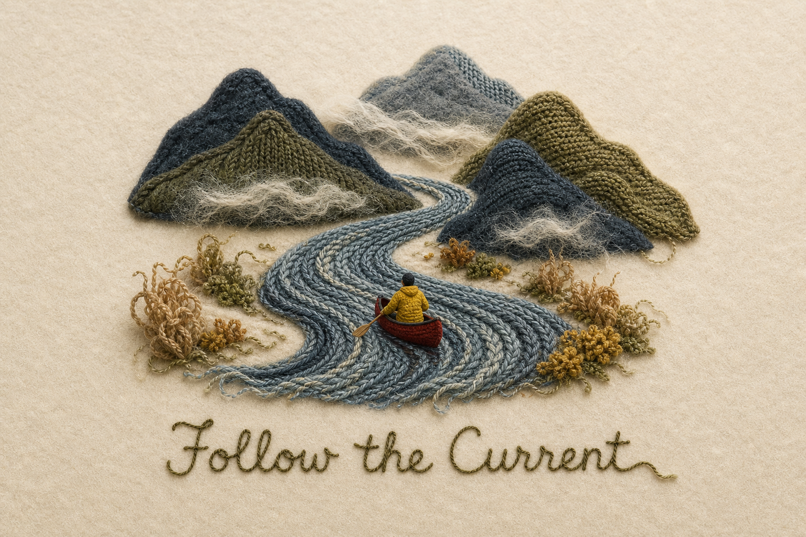
照片负责“是谁与发生了什么”，风格参考负责“材料应该有多真实”，Skill 负责“如何取舍与重构”，ImageGen 最后负责像素。
后续实验不会替换前面的证据。下面每一层都有独立锚点、文件和验证边界，可以直接回到原始能力或继续查看新增研究。
BASELINE LOCKED 原始图片文件、原版对比与独立复现都由项目测试作为必需资源保护。
这组输入与输出都由本研究使用 Codex 内置 ImageGen 制作。拖动滑杆查看：辨识锚点被保留，但摄影舞台被真正重构。
红色独木舟、黄色外套、S 形方向、山谷轮廓与少量芦苇。
河流成为编织路径，山成为不对称织物岛，雾成为松散马海毛。
删除写实天空、水面反射、连续植被、摄影景深与背景杂讯。
这是一次“同一意境、六种材料”的控制实验：六张图使用同一张源照片和同一份语义 Brief。变化的不是故事，而是每个效果 Profile 对路径、山门、空间、缺陷和成品用途的重新规定。
红色独木舟 · 黄色外套 · S 形路径 · 山间开口 · 稀疏芦苇
安静、独行、向前；不是冒险奇观，而是一段被材料重新记住的旅程。
一根路径带着小小旅行者，穿过山间之门。
编织路径承担视觉动线，山脉拆成有缝隙的织物岛，马海毛雾气让“穿过山门”的意境变得柔软而安静。
能力实验回答“能生成什么”；下面四个案例回答“为什么这个场景应该选择这个效果”。每组都保留源照片，结果图不承载正式文字，让设计师在后期完成标题与品牌排版。
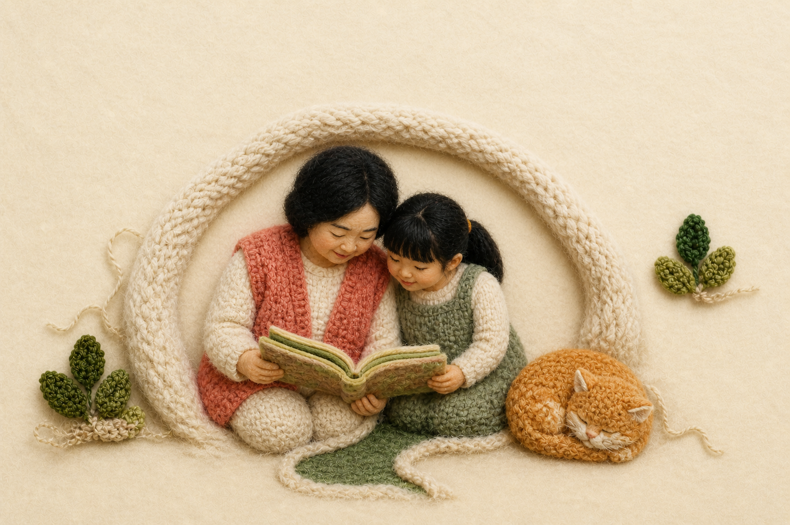
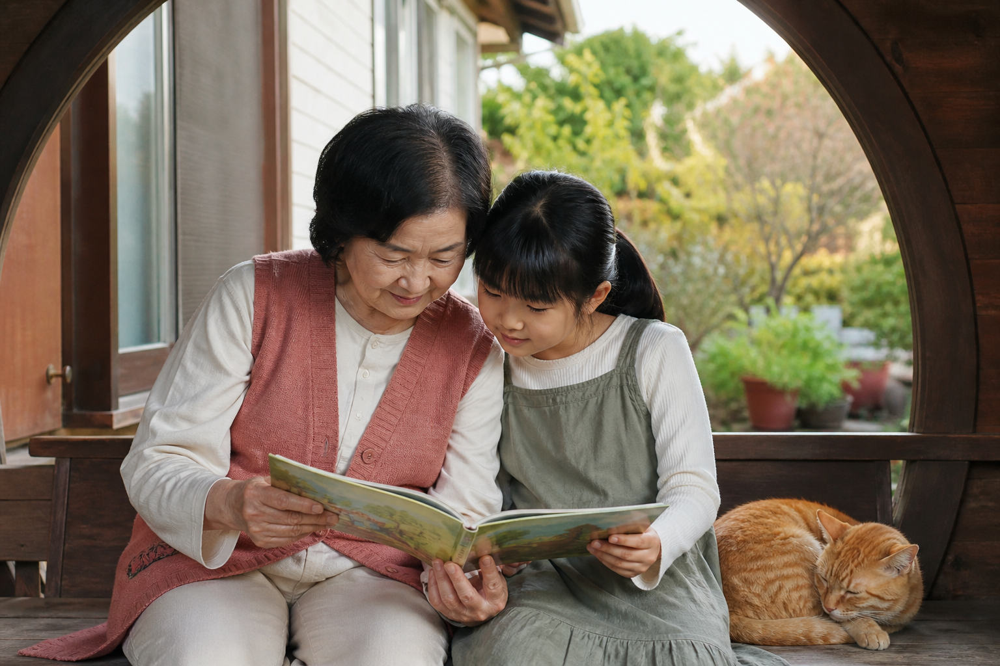
照片最重要的不是庭院细节，而是两代人靠在一起看同一本书。针织把木拱门放大成“拥抱环”，把共读关系变成可触摸的家庭记忆。
实际价值 不需要精确还原住宅环境，也能保留“这是我们三个人的时刻”。
旅行封面首先要让路线和方向被看见。木刻删除雾、水纹和植被，把河流压缩成高对比刀痕，让红舟和黄衣成为远距离也能识别的锚点。
实际价值 从一张普通风景照中提炼出具有识别度的“这次旅程的图腾”。
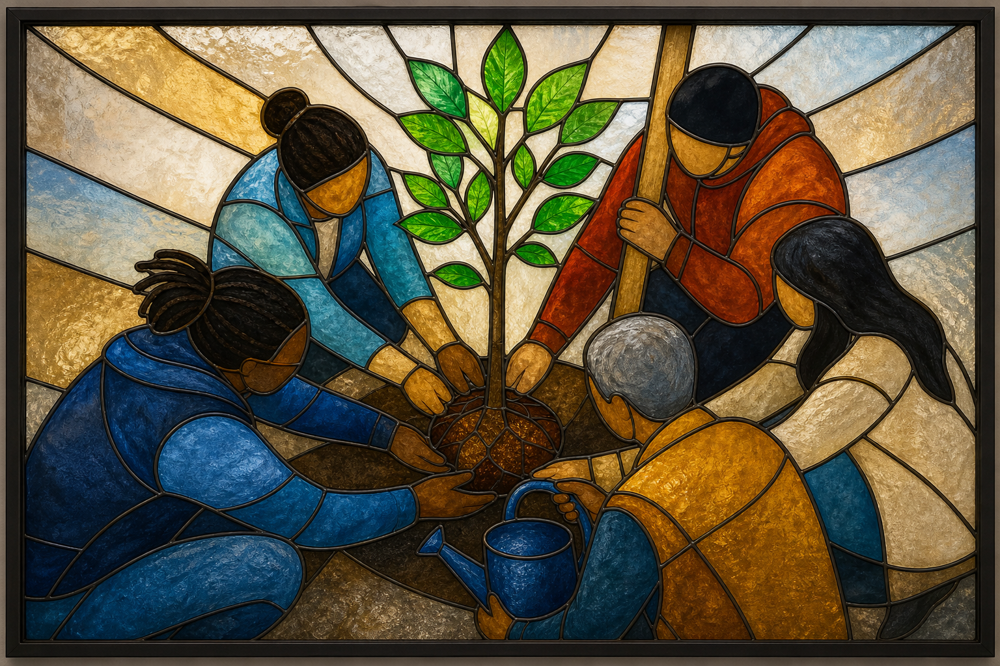
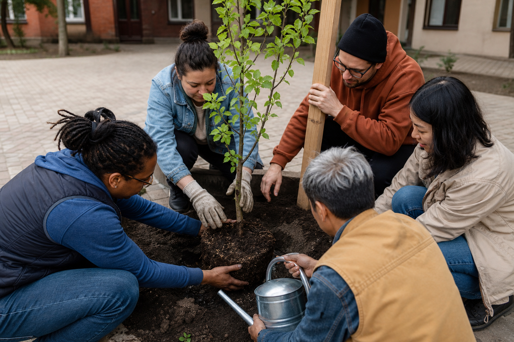
公益传播不必依赖一张标准合影。玻璃效果把五个人转成五块不同色域，用铅线连接手、泥土和水，让中央树苗成为清晰的共同成果。
实际价值 人物身份被适度抽象，仍能保留“多人共同照顾一件事”的行动关系。
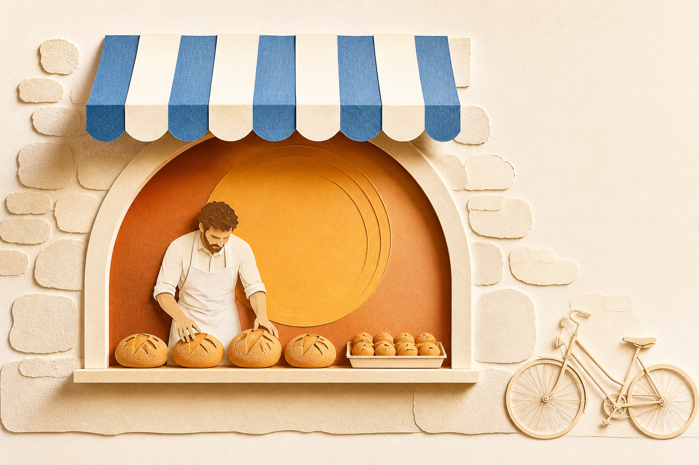
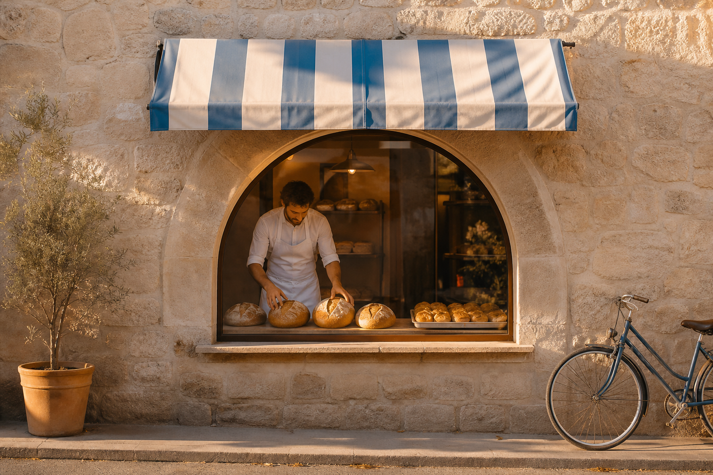
剪纸把石墙噪点压成干净平面，把拱窗变成太阳与烤炉的双重隐喻；重复圆形面包负责节奏，大面积奶油色墙面留给活动标题。
实际价值 保留“街角小店”的身份，同时把真实店面整理成可扩展的品牌图形。
下面的标题、日期、信息层级和规格全部是可选择、可复制的 HTML 文本，不是生图模型烘焙进图片的字符。它们展示一条更可靠的生产路径：先生成无字艺术资产，再进入确定性排版。
Three generations of small moments,
kept close.
A sample editorial cover demonstrating how symbolic generated artwork can enter a governed report layout.
SAMPLE LAYOUT · ILLUSTRATIVE DATA
Fresh loaves, slow mornings,
one warm window.
进入真实生产还需要替换正式品牌、审核文案与数据、确认字体许可、建立出血与色彩配置，并由设计师输出可编辑源文件。页面证明的是工作流可行性，而不是替代这些步骤。
扩展 Skill 已经把照片理解、目标场景、材料效果与交付规格拆开。用户可以只说明发布目标，让编译器自动选择效果；也可以显式覆盖效果，同时保留目标相关的质量门禁。
锚点、关系、情绪、路径与隐喻
受众、目标与推荐效果排序
材料如何处理路径、形体与空间
画幅、留字安全区与输出变体
确定性编译与目标质量门禁
SKILL.md
agents/openai.yaml
references/
essence-schema.md
profile-authoring.md
quality-gates.md
profiles/
effects/ 6 JSON
scenarios/ 4 JSON
deliveries/ 4 JSON
scripts/
build_prompt.py
examples/ 4 essence files
tests/
test_prompt_compiler.pypython scripts/build_prompt.py \
--essence examples/canoe-essence.json \
--scenario travel-cover \
--effect auto \
--format json“High-contrast carved rhythm preserves direction at small sizes.”
输出不仅包含 Prompt，还包含路由原因、输出变体与合并后的质量门禁，便于后续自动化或人工审核。
亲密、安全、关系优先
路线、方向、缩略识别
共同体、象征、可信层级
图形层级、留白、可排版
FAIL-CLOSED 错误 Essence、未知效果和不允许的交付组合不会静默降级，而是明确失败。
这张海岸骑行照片此前没有出现在项目中。Skill 只收到目标 `travel-cover`：自动选择木刻；随后用同一 Essence、同一 `field-journal` 规格人工覆盖为剪纸，检验推荐理由能否在真实输出中成立。
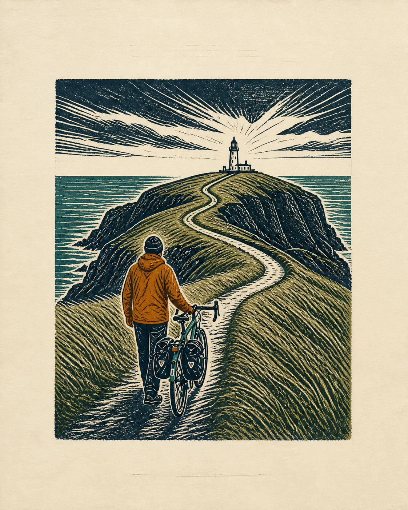
“高对比刀痕能在小尺寸中保持方向。”
路线像一根明确的刻线贯穿人物与灯塔，橙衣和绿色自行车仍是强色彩锚点，最符合旅行封面的缩略识别目标。
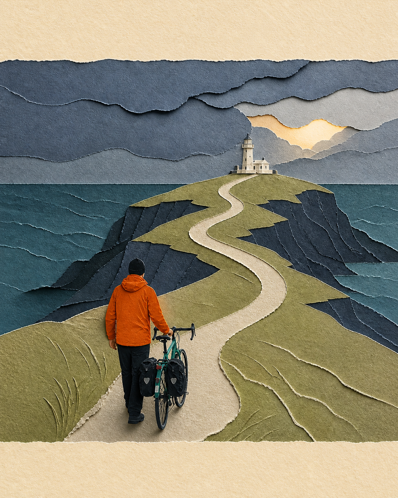
“纸带适合更安静的编辑路线故事。”
材料层次更柔和、留白更自然，仍然是有效交付；但缩小后人物、路径和灯塔的对比略弱，因此在当前目标下只落后一分。
人、车、灯塔、颜色和方向关系全部保留
S 路径均成为画面主轴
木刻的黑白结构更快建立起点与终点
刀痕与纸层都形成真实材料信号
第二轮上下约 10% 留字带通过
两张首轮结果都把画面铺满，无法稳定放置日志标题与坐标。Skill 没有无限重试，而是各做一次只针对安全区的修正；随后把证据写回 `field-journal` Profile。
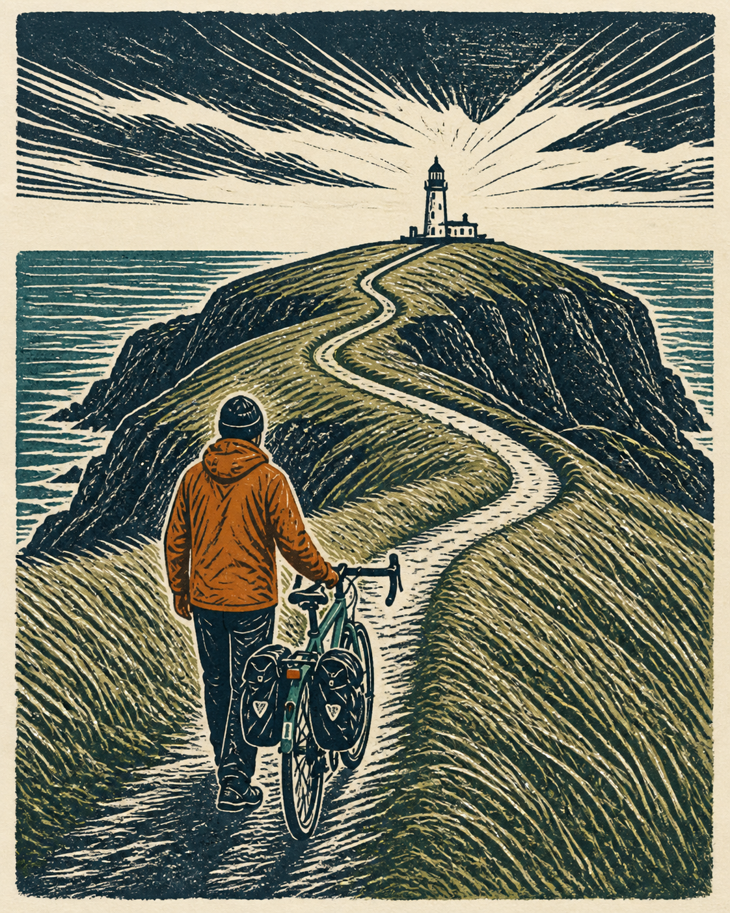
当前目标强调路线力量和缩略识别，所以木刻更合适；如果目标改成安静、现代的编辑封面，剪纸可能成为首选。这个结果支持“按目标路由”，而不是宣称某个效果永远最好。
评分是对每轮单张结果的公开人工评审，不代表模型统计性能；未使用隐藏候选图或额外人工润色。
人物关系、产品静物和建筑交通分别走过自动路由。三个源图都是本轮新生成，ImageGen 接收编译 Prompt 后各只生成一次；没有隐藏候选图，也没有针对性修正。
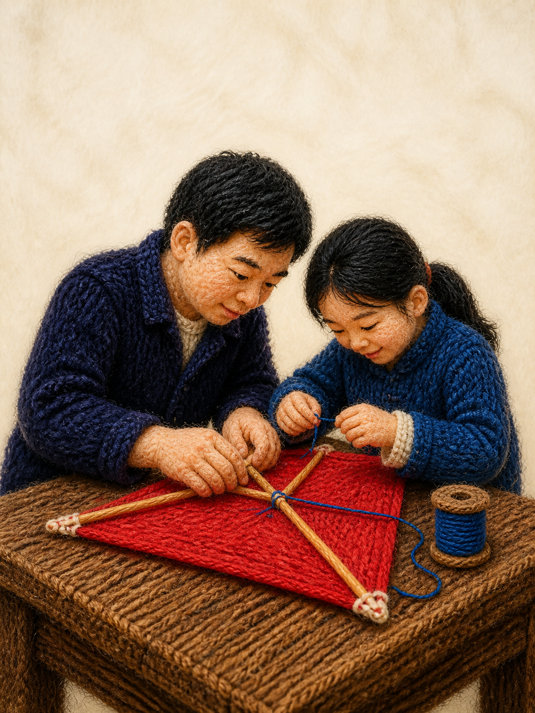
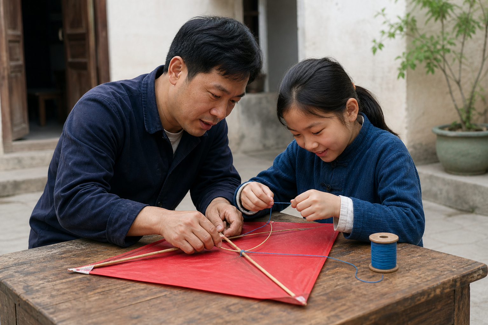
SOURCE / person + relationshipfamily-memory → organic-knit → book-cover
两人数量、共同手势、红风筝、竹架和蓝线轴保留；针织把协作关系变成柔软的家庭封面，同时上方保留标题区域。
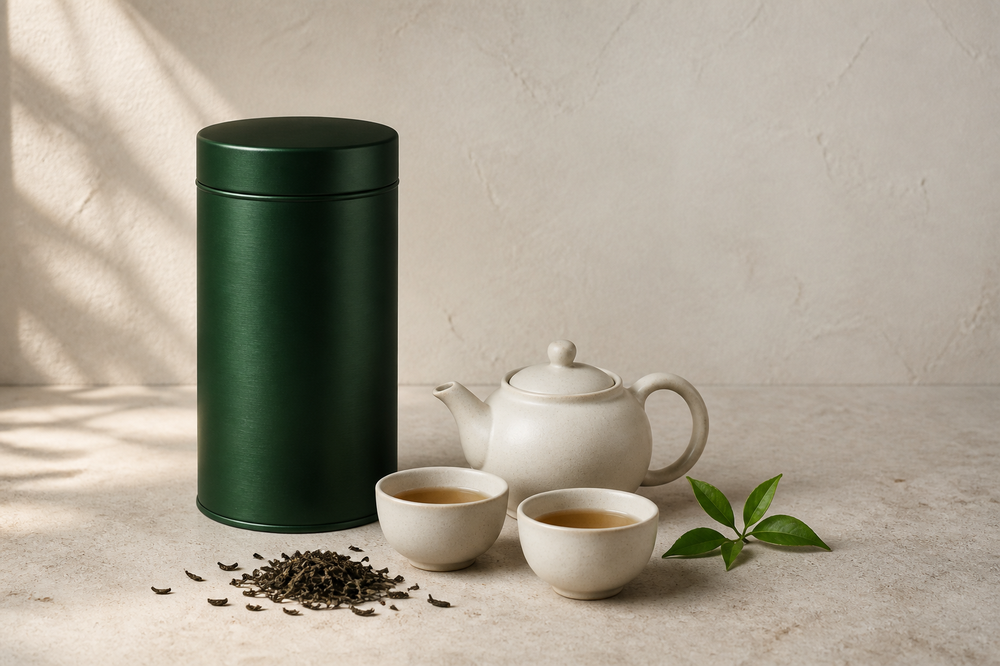
SOURCE / product still lifeseasonal-campaign → layered-paper → campaign-poster
1 罐、1 壶、2 杯数量正确，绿色圆柱仍是主锚点；分层纸带形成品牌图形，同时右上方保留大面积活动文案空间。
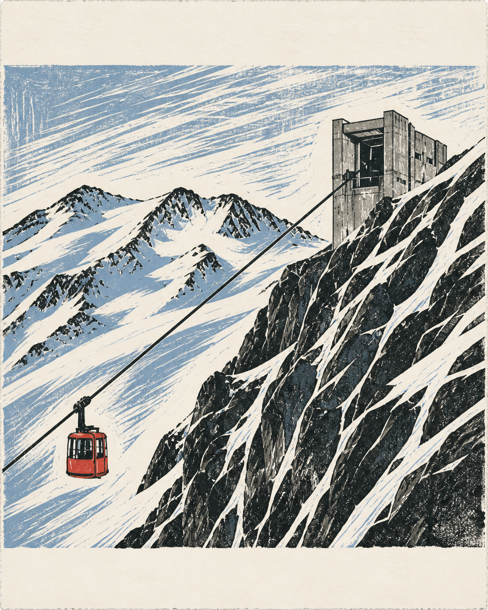
travel-cover → woodcut → field-journal
一车、一线、一站和左下到右上的工程路径完整保留；更新后的 Profile 在新样本中直接生成了清晰的上下元数据带。
样本是为合法、可复现而生成的合成照片，并且由我们有意选择来覆盖三类结构。它不能估计真实用户照片成功率、隐私处理能力、模型版本稳定性或批量成本。下一次扩容应随机化输入并记录失败，而不是继续挑容易成功的案例。
`score_review.py` 不看图片，也不假装自动理解审美。它读取人工观察记录，检查场景与交付 Profile 的门禁是否完整、状态是否合法，再计算可重复的 pass/fail/unverified 汇总。
场景与交付定义必须检查什么
观察实际像素并写一条具体证据
缺门禁、额外门禁、非法状态直接失败
确定性生成 decision、计数和分数
python scripts/score_review.py \
--review forward-tests/lighthouse-travel/review-auto-v2.json \
--scenario travel-cover \
--delivery field-journal \
--format json已安装 Skill 接受中文目标与中文 Essence，生成无字剪纸 Key Art；准确品牌、标题、日期和 CTA 在下面由 HTML/CSS 确定性排版。所有中文都可选择、复制和替换。
使用右上低细节区承载主标题，产品组合保持完整；所有文字位于 DOM，不属于生成图片。
09.12—10.08 · 周末茶席
横向裁切保留茶罐、茶壶和两只杯子，但舍弃部分底部叶形。这正是 Review 中 `multi-crop resilience=4/5` 的可见取舍。
“林间茶事”、活动日期和 CTA 均为示例占位。真实发布仍需要品牌授权、正式文案、字体许可、产品声明审核、无障碍替代文本和渠道尺寸导出。
当前茶具案例是分层剪纸效果。下面新增三组不同材料：自动针织、自动彩色玻璃和显式陶瓷浮雕。每组都完整保留原始照片，避免只看结果而无法判断 Skill 做了什么。
模拟纸层、毛边与投影，不是实际裁纸成品。
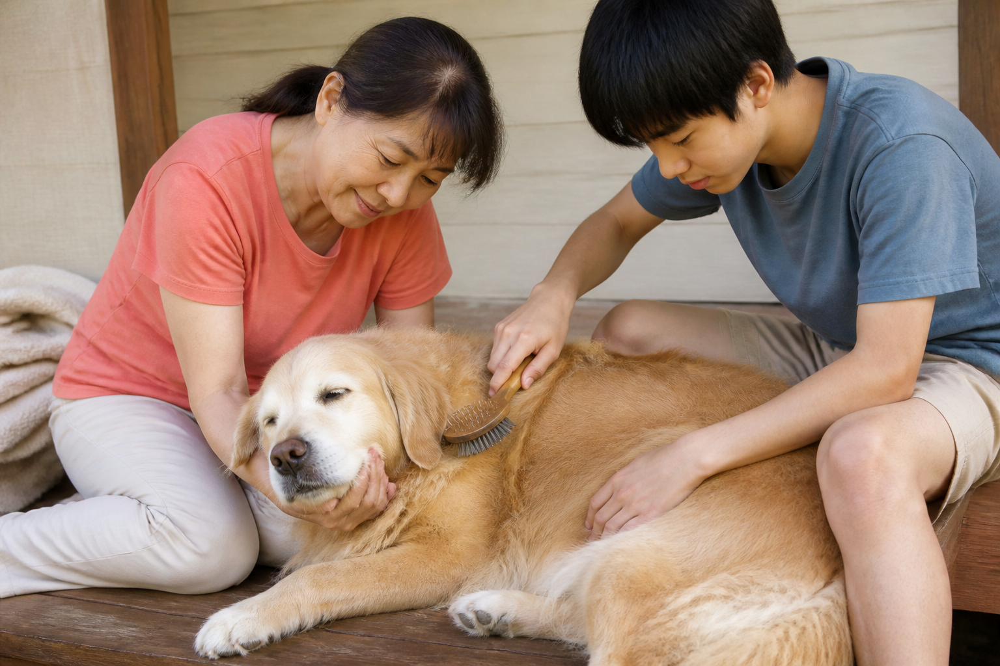
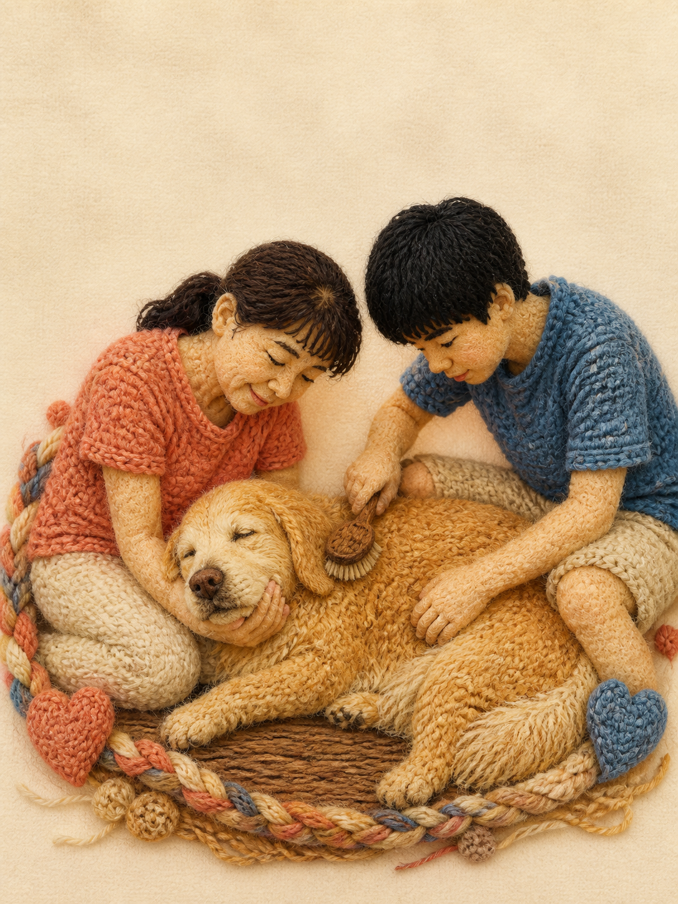
恰好两人、一只犬、蜂蜜色犬毛、珊瑚与蓝色衣物、梳理动作。
两人的身体弧线变成保护环，犬的卧姿成为中央针织徽章。
墙板、毛毯和真实庭院空间，换成可排版的暖白纤维背景。
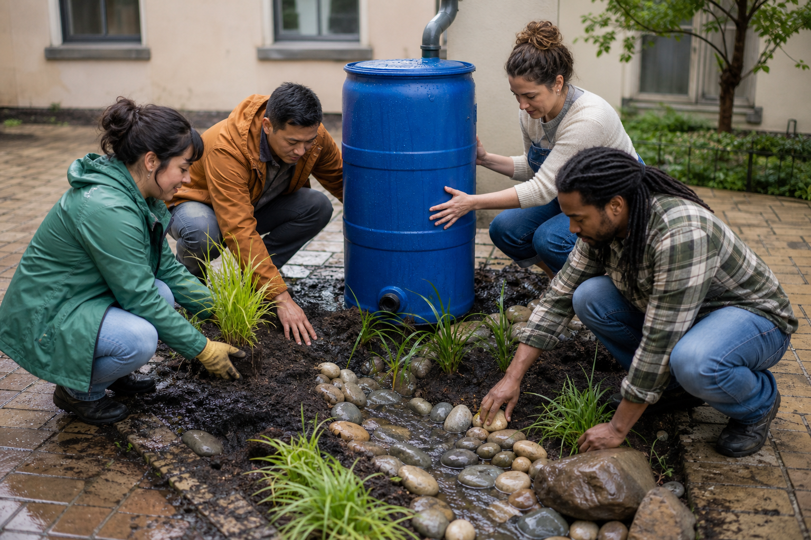
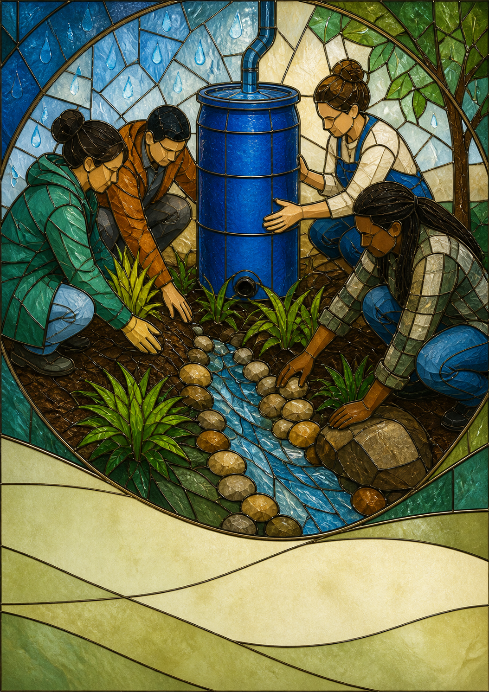
四名人物、一个蓝桶、植物、石块水道和开放协作圆环。
人物成为四块玻璃色域，手臂成为铅线，水道成为蓝色发光路径。
公寓、铺地和写实面孔；底部新增报告标题与摘要安全区。
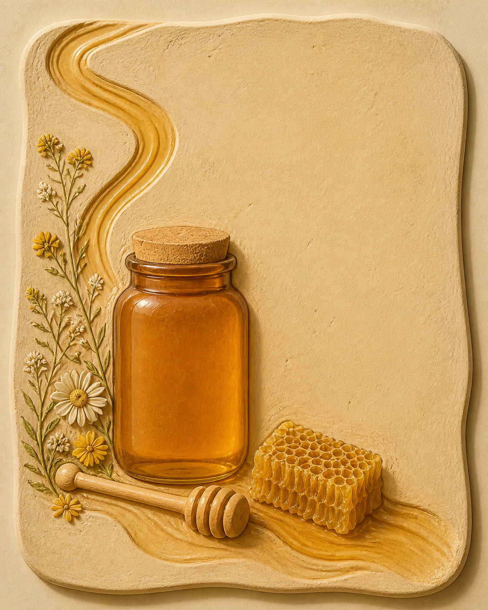
一个蜂蜜罐、软木塞、蜂蜜棒、蜂巢、野花和琥珀金色。
产品轮廓成为高浮雕，蜂蜜流动变成釉色凹槽，花枝成为浅浮雕边饰。
写实玻璃反射和石材噪点；右上保留活动文案区。
这些仍是有意选择的合成样本和人工 Review，不能解释为生产成功率。陶瓷样例的 34/35 来自横幅裁切会损失部分花枝和釉色路径。
同一张已审核无字 Key Art 与同一份 UTF-8 `copy.json`，经过本地确定性渲染器生成 4:5 海报和 16:9 横幅。文字不再手工写进网页，也不由 ImageGen 猜测。
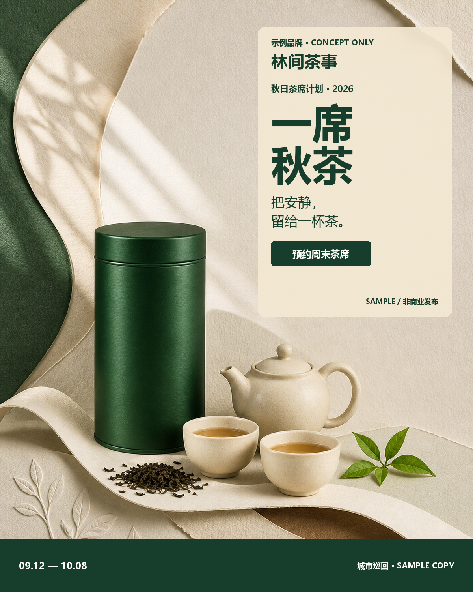
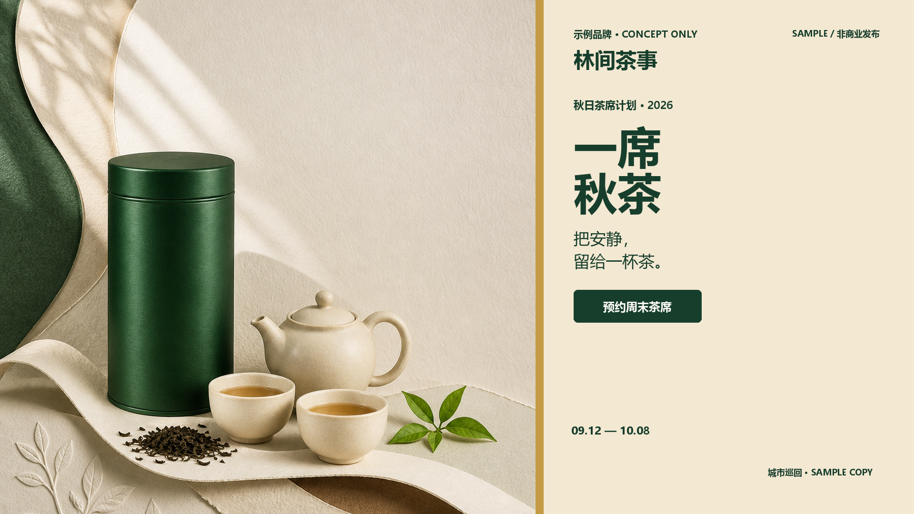
PASS 只证明输入文案被准确绘制、没有溢出、对比度和安全区满足模板要求。真实品牌授权、文案事实、Logo、字体许可、法规声明与渠道审核仍需由发布团队确认。
查看 V1 设计契约 →下面三组都展示“审核后的无字 Key Art → Skill 自动排版成品”。每类使用不同字段、不同安全区和不同主版尺寸；原有 4:5/16:9 活动海报保持不变。
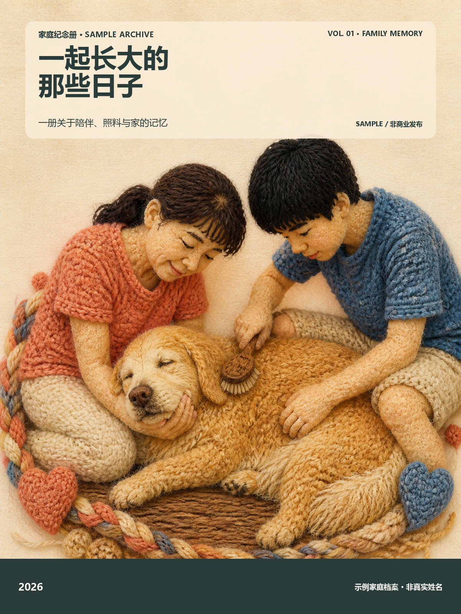
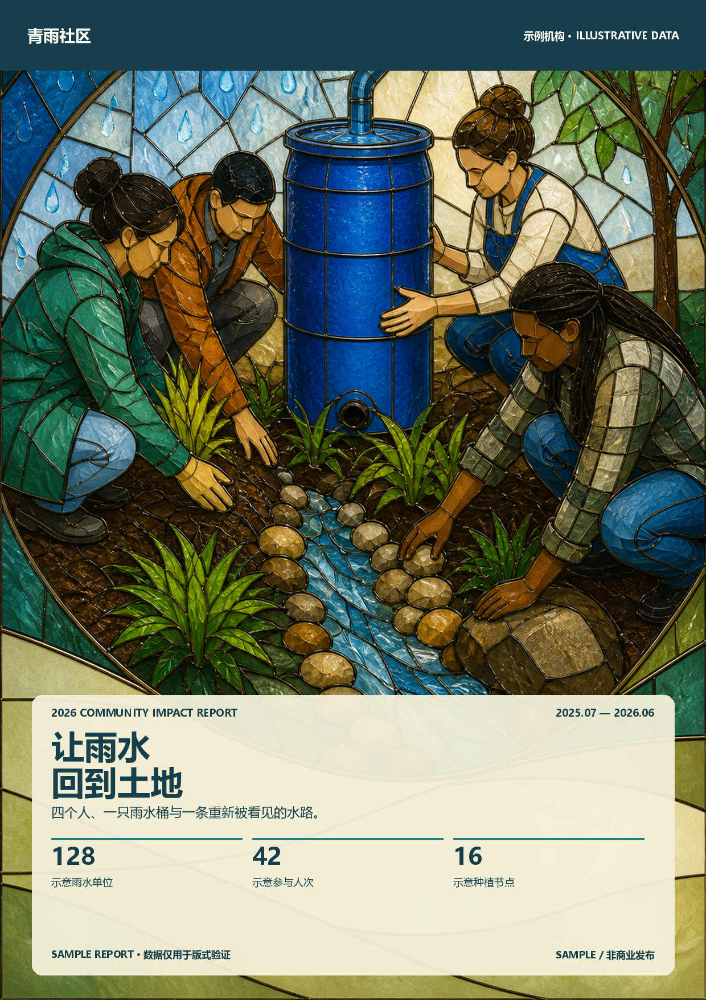
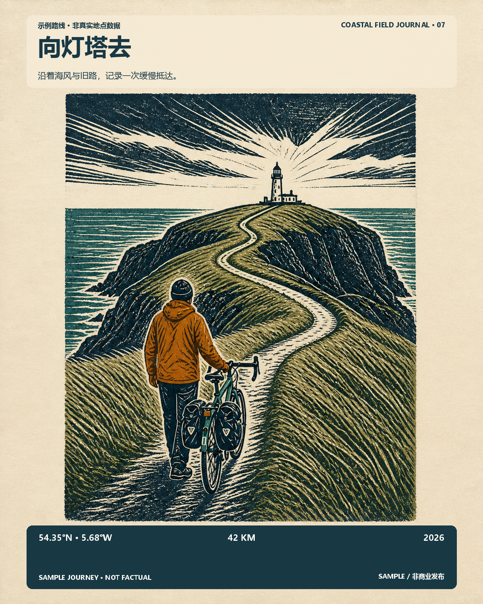
campaign-poster
book-cover
impact-report
field-journal
活动海报 4:5
活动横幅 16:9
纪念册 3:4
报告 A4
日志 4:5
文案 · 溢出 · 对比
保护区 · 声明 · 尺寸
本阶段只复用
已审核 Key Art
可以。这里不再复用茶产品，而是把蜂蜜原图、陶瓷浮雕 Key Art 和蜂蜜专用中文文案送进完全相同的 `campaign-poster` 模板。模板和渲染器没有为蜂蜜做特例修改。
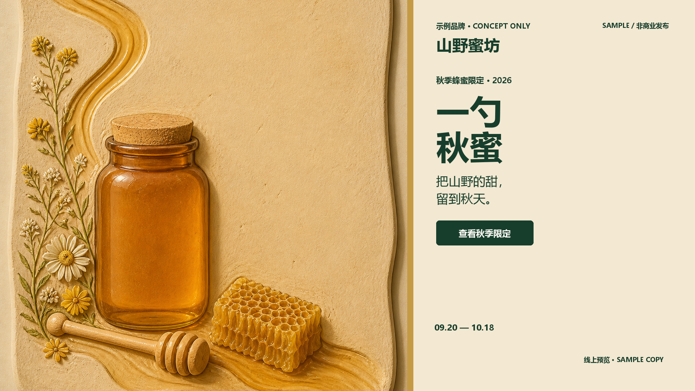
茶与蜂蜜现在共享同一个模板和渲染器，只替换审核后的 Key Art 与精确文案。这证明两个选定产品样本可跨图片复用，但不代表批量成功率。
“山野蜜坊”、日期、CTA 与产品语言均为演示文案。结果不验证产地、营养、价格、健康宣称、商标、标签法规或商业发布资格。
查看验证契约 →当品牌、文案、事实、法律、资产与渠道负责人都确认后，调用方才把 `copy_status` 从 `sample` 改为 `approved`。渲染器随后移除系统样例声明，并把右下字段恢复成真正的渠道信息。
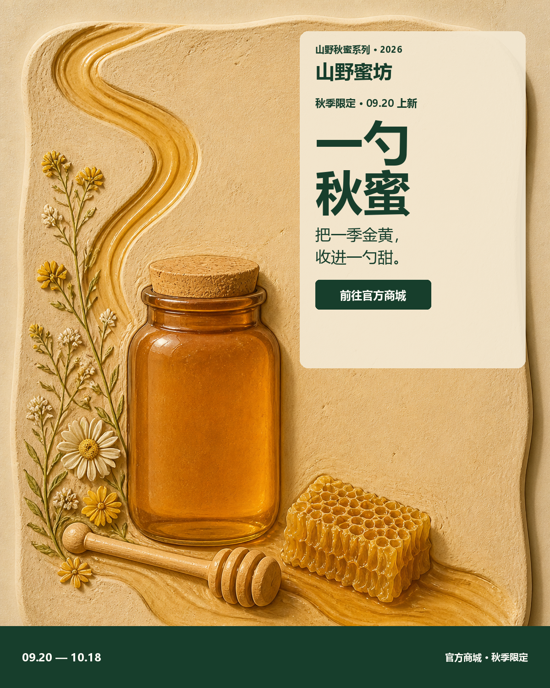
这些证据不由图片渲染器生成，也不能从 PASS 分数中推断。
品牌名、Logo、活动身份和视觉使用范围。
标题、日期、CTA、渠道与所有产品表述。
产地、价格、营养、健康宣称、标签与强制声明。
最终 Logo、字体许可、图像权利、色彩、出血和尺寸。
目标链接、商城库存、无障碍文本、追踪与发布时间。
两个输出均不存在 `generated.sample_disclosure`，渠道字段准确保留，并且 Release Manifest 验证为 PASS。
页面中的“山野蜜坊”仍是虚构示例。图片看起来像正式发布，不代表已经取得品牌、事实、法规、字体或渠道授权；真实项目必须以外部审批包为准。
查看正式模式契约 →正式成品必须绑定当前文案和 Key Art 的 SHA-256，并包含品牌、文案、法务、设计和渠道五类完整审批。缺包、待审批或任一文件变化，渲染器都会在输出前拒绝。
{
"release_scope": "demo",
"template": "campaign-poster",
"copy_sha256": "37b7f2ff…ab6c",
"art_sha256": "8b8a0f26…b9da",
"approvals": {
"brand": "approved",
"copy": "approved",
"legal": "approved",
"design": "approved",
"channel": "approved"
}
}示例审批记录使用 `demo://` 证据 ID，并明确 `release_scope=demo`。它用于验证工作流，不代表真实人员或商业授权。
python scripts/release_manifest.py --copy approved.json --art key-art.png --release-id autumn-2026 --scope production --out release.json
python scripts/render_layout.py --copy approved.json --art key-art.png --release-manifest release.json --out-dir release/Manifest SHA、Copy SHA、Art SHA 与五类审批记录进入 `render-report.json`。
阅读完整验证结果 →V1 可以证明审批包完整且输入未变化，不能证明审批人身份、权限、签名真实性或撤销状态。生产环境仍需要真实身份与审计系统。
查看 Release Manifest 契约 →Release Security V1 使用仓库外私钥对 Manifest 原始字节做 Ed25519 签名，通过可信公钥验证后才渲染，并把输入与输出哈希追加到哈希链审计日志。
一次性 Demo 私钥在系统临时目录生成，仅用于签署保留的蜂蜜 Manifest；公钥和签名写入项目后，整个私钥临时目录已删除。
python scripts/release_security.py verify --manifest release.json --signature signature.json --trusted-keys trusted-keys.json
python scripts/release_security.py audit-verify --audit-log release-audit.jsonl签名证明有人控制对应私钥，本地审计链能暴露修改；它们不能证明真实身份、组织权限、密钥未泄漏，也不能防止日志被整体删除或回滚。生产环境需要身份系统、HSM/KMS、撤销、独立时间戳和远程不可变审计。
查看安全契约 →停止继续堆基础设施。当前阶段的动作是稳定地使用、记录失败、扩大样本和保留可复现证据；涉及真实身份、密钥托管、客户资产与公开发布的事项全部延期。
信息不足就停下来澄清，不猜身份、数量或权限。
只记录能从原图和目标中得到的证据。
一次只修一个失败门禁；同一门禁两次仍失败就停止。
任何必需门禁 fail 或 unverified，都不能进入发布层。
文字溢出就改文案或换行，不无限缩字，也不交给生图模型。
任一哈希、审批、签名或审计失败，立即冻结该次输出。
私钥和未授权私有原图不得进入项目或发布包。
在用户明确要求提交后，把当前分支形成一个可回退版本；不要再让新实验改变既有证据。
需要用户明确提交指令统计自动路由、首次通过、修正次数、失败门禁、人工时间和不同模板稳定性。
先测稳定性，再谈产品化补齐桌面、手机、键盘、焦点、中文扩展和下载交互的真实浏览器证据。
等待可编程浏览器控制仅在用户提供图片、正式文案、权限和真实审批人后运行，不由 Demo 自动假设。
需要新授权与素材Skill 中的动作、失败响应和停止规则位于维护中的 Runbook，而不是只存在于网页说明。
阅读 Non-Production Action Runbook →Publication Studio 把四类模板、准确文案、确定性渲染、门禁反馈和批量导出放进一个 localhost 工作区。它直接调用同一个 `render_layout.py`，不会维护第二套排版逻辑。
工作台不接收任意路径或外部上传，不进行事实、授权、许可证和发布审批。真实 Key Art 上传、账号权限、持久化任务和公开部署仍不在 V1 范围内。
查看工作台设计契约 →以下合成图来自固定上游 commit。它们证明该方法对交通主体与自然风景都可工作；独立案例则验证本研究能够重新执行同一路线。


来源：上游仓库 `assets/`，MIT License。页面未修改或伪装这些结果的出处。
把每一层的职责分开，才能理解它的意义，也能避免把优秀结果误认为仓库训练了模型。
提供主体、关系、轮廓、运动与情绪。
识别方向、锚点，并完成 retain / transform / discard。
选择隐喻、设计装置、构图尺度、材料与避免项。
接收原图、风格参考和生产 Prompt，生成实际像素。
验证辨识、转化、留白、材质和题字，一次只修一个问题。
只保留定义身份的少数锚点。摄影透视、连续背景和次要纹理都可以被舍弃。
只借用真实纤维、针脚、毛毡、边缘与光线质量，明确排除火车、桥梁和原题字。
必须说明选了什么、为什么变、怎样重构，以及什么结果即使漂亮也应该拒绝。
仓库很小，但命中了生成式创作最难维护的一层：怎样让不同任务沿着同一种判断方式工作。
“温暖、手作、有设计感”被拆成取舍、隐喻、层级、留白、材料和瑕疵。
要求至少三项结构变化，让输出拥有新的视觉路径，而不是原图的针织复制品。
团队可以版本化工作流、参考图和质量门禁，而不是在聊天记录里寻找灵感句子。
规则可以被消融、比较和评分，为计算创意与人机协作提供清晰实验单元。
选择一个场景，查看输入、交付物与最直接的业务价值。页面只描述适配方向，不声称上游已经实现批量产品能力。
Logo、价格和长文案应在 Figma 或专业排版软件中后期完成。
扩展不应先堆更多风格。优先解决复现、检查和交付，再进入批量生产与真实组织流程。
增加无字底图模式、生成档案和跨题材最小测试集。
把主观质检拆成可解释信号，但保留设计师最终判断。
支持品牌批量资产、无字/题字版本、安全区和后期编辑接口。
让生成结果进入真实设计、印刷、包装或针织制造流程。
它在不同成熟度下承担不同职责；清楚区分这些层级，比笼统声称“可以商用”更诚实。